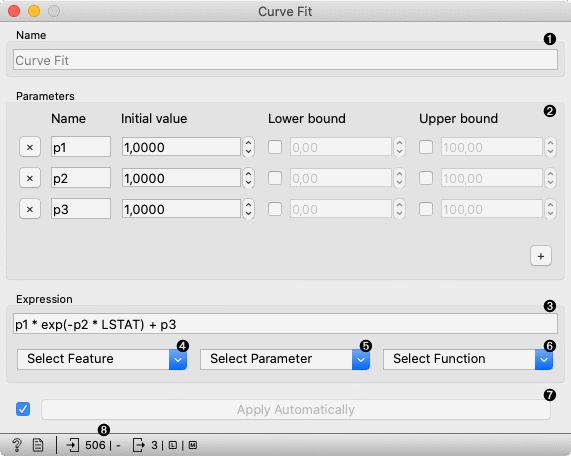

Curve Fit
Fit a function to data.
Inputs
- Data: input dataset
- Preprocessor: preprocessing method(s)
Outputs
- Learner: curve fit learning algorithm
- Model: trained model
- Coefficients: fitted coefficients
The Curve Fit widget fits an arbitrary function to the input data. It only works for regression tasks. The widget uses scipy.curve_fit to find the optimal values of the parameters.
The widget works only on regression tasks and only numerical features can be used for fitting.

- The learner/predictor name.
- Introduce model parameters.
- Input an expression in Python. The expression should consist of at least one fitting parameter.
- Select a feature to include into the expression. Only numerical features are available.
- Select a parameter. Only the introduced parameters are available.
- Select a function.
- Press Apply to commit changes. If Apply Automatically is ticked, changes are committed automatically.
- Show help, produce a report, input/output info.
Preprocessing
Curve fit uses default preprocessing when no other preprocessors are given. It executes them in the following order:
- removes instances with unknown target values
- removes empty columns
- imputes missing values with mean values
To remove default preprocessing, connect an empty Preprocess widget to the learner.
Example
Below, is a simple workflow with housing dataset. Due to example simplicity we used only a single feature. Unlike the other modelling widgets, the Curve Fit needs data on the input. We trained Curve Fit and Linear Regression and evaluated their performance in Test & Score.